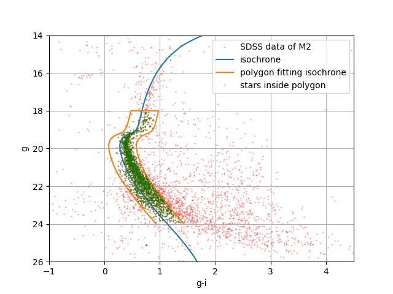

Stellar Evolution and Nucleosynthesis - Main Sequence and Post Main Sequence Stars
Supervisor: Dr. Suparna Roychowdhury & Prof. Dhruba Gupta
I conducted this study as part of my Bachelor’s thesis at St. Xavier’s College, Kolkata. This research explores the intricate interplay between stellar evolution and nucleosynthesis, focusing on the Main Sequence (MS) and Post-Main Sequence phases. Using theoretical models, computational tools, and observational data, I investigated how nuclear reactions shape stellar structure, elemental production, and galactic chemical enrichment.
Key Investigations:
-
Stellar Structure & Homologous Modeling: Derived scaling relations for MS stars from fundamental stellar structure equations; Modeled stellar interiors using StatStar, validating theoretical predictions against empirical data.
-
Observational Data Analysis: Analyzed GAIA DR3 and HIPPARCOS surveys to construct Color-Magnitude Diagrams (CMDs) and Hertzsprung-Russell (HR) diagrams; Identified coeval stars in clusters (e.g., Messier 2) via MIST isochrone fitting, determining age, metallicity, and distance.
-
Post-MS Nucleosynthesis: Studied the triple-alpha process and the critical $^{12}C(\alpha,\gamma)^{16}O$ reaction, which determines the C/O ratio in stellar cores; Performed R-matrix analysis (using AZURE2) to resolve resonant energy levels in $^{16}O$, enhancing cross-section predictions for helium burning.

Outcomes & Directions:
-
Demonstrated observational alignment with homologous models: pp-chain dominates in low-mass stars, while CNO-cycle fits high-mass stars.
-
Quantified uncertainties in $^{12}C(\alpha,\gamma)^{16}O$ rates, pivotal for understanding elemental abundances in evolved stars.
-
Developed Python pipelines for automated isochrone fitting and cluster parameter estimation.
-
To work with later evolutionary stages and more complicated evolutionaty codes in future.
Predicting Sunspot Cycles Using Machine Learning Techniques
Supervisor: Dr. Suparna Roychowdhury

Sunspots, dark regions on the Sun’s surface caused by intense magnetic activity, serve as key indicators of solar cycles, which influence space weather, satellite operations, and Earth’s climate. Predicting sunspot numbers is crucial for anticipating solar storms, mitigating disruptions to communication systems, and planning space missions. We have been trying to study the sunspots in spans of few years and predict more for the remaining years. This is an ongoing group research carried out by students of the the Xaverian Astronomical Society (XAS).
Key Investigations:
-
Understanding how sunspots formamtion and pole-flip.
-
Using machine learning models to predict monthly sunspot numbers based on historical time series data obtained from SILSO.
-
Comparison between traditional regression approaches and deep learning architectures.
Future directions:
- Using sunspot activity forecasts to investigate the influence of solar variability on space weather phenomena and terrestrial climate fluctuations.